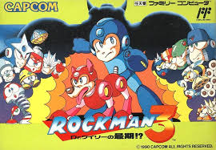
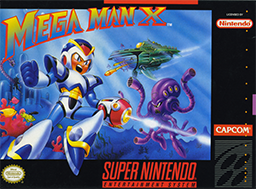

O Nascimento de um Herói Pixelado
Em 1987, a Capcom lançou um pequeno robô azul que mudaria para sempre o mundo dos games: Mega Man. Com visual simples e jogabilidade desafiadora, ele se tornou um ícone da era 8-bit e conquistou fãs em todo o planeta.
Tudo começou com dois cientistas brilhantes o Dr. Light, idealista e pacífico, e Dr. Wily, ambicioso e vingativo. Após ser desacreditado pela comunidade científica, Wily rouba os robôs criados por Light e os transforma em armas de destruição.
Para deter Wily, Dr. Light modifica seu robô doméstico Rock, transformando-o em Mega Man. Agora equipado com o Mega Buster e a habilidade de copiar os poderes dos inimigos, ele parte em uma jornada para salvar o mundo dos planos malignos de Wily.
Mega Man: Mais que um Jogo
Com mais de três décadas de história, Mega Man é muito mais que um personagem: é um símbolo de perseverança, evolução e criatividade. Sua influência pode ser vista em jogos modernos, trilhas sonoras remixadas, colecionáveis e até em competições de speedrun.
